Nu skal vi bygge et rigtigt tekst-baseret RPG spil fra bunden!
Spillet foregår i Sønderborg by, hvor spilleren skal finde tre påskeæg, dekorere dem og aflevere dem på Sønderborg Slot.
Vi bruger de Python-elementer vi lærte i RPG 1 - print(), input(), funktioner, lister, klasser og game loops.
Nu sætter vi dem sammen til et sammenhængende spil.
Inden vi koder, er det vigtigt at kende spillets verden.
Her er et kort over Sønderborg med alle lokationer, forbindelser og hvad der gemmer sig hvert sted.

Spilleren starter på Kasernen (Coding Pirates lokalet) og skal finde vej rundt i byen.
Der er 7 lokationer i alt. Hver lokation har udgange til andre steder, og nogle steder gemmer sig æg eller dekorationsgenstande.
NPC'er (Non-Player Characters) er personer man kan tale med - de giver hints og hjælp.
| Lokation | Udgange til | Æg / Genstand | NPC |
|---|---|---|---|
| kasernen ⭐ START | havn, gågaden | 🥚 Grønt æg | Coding Pirate (hjælp) |
| havn | kasernen, gågaden, rønhaveplads | 🥚 Blåt æg | Fisker |
| gågaden | kasernen, havn, rådhuspladsen, rønhaveplads | 🥚 Gult æg, 🎀 Gul sløjfe | Blomsterhandler |
| rønhaveplads | havn, gågaden | 🎨 Blå farve | – |
| rådhuspladsen | gågaden, strandpromenaden, slot | 🌿 Grønt mønster (til grønt æg) | Gammel dame |
| strandpromenaden | rådhuspladsen, slot | 🥚 Rødt æg (via NPC), 🎀 Rød sløjfe | Stranddame |
| slot 🏆 MÅL | rådhuspladsen, strandpromenaden | – | Slotsvagt |
Alle spillets lokationer gemmes i én stor variabel kaldet locations.
Det er en ordbog (dictionary), hvor hver nøgle er lokationens navn, og værdien er endnu en ordbog med lokationens data.
En ordbog gemmer data som nøgle-værdi par. Man tilgår data ved hjælp af nøglen:
person = {
"navn": "Anders",
"alder": 14,
"by": "Sønderborg"
}
print(person["navn"]) # Udskriver: Anders
print(person["by"]) # Udskriver: SønderborgI vores spil bruger vi en ordbog til at beskrive hver lokation:
locations = {
"kasernen": {
"navn": "Kasernen - Coding Pirates lokalet",
"beskrivelse": (
"Du befinder dig i Coding Pirates' lokale på Kasernen.\n"
"Computere og farvede ledninger fylder bordene.\n"
"En Coding Pirate sidder klar og smiler til dig."
),
"udgange": ["havn", "gågaden"],
"npc": "coding pirate",
"æg": "grønt æg",
"genstand": None,
},
"havn": {
"navn": "Sønderborg Havn",
"beskrivelse": (
"Du ankommer til den smukke havn. Bådene gynger stille i vandet.\n"
"En fisker sidder på kajen og ordner sine net."
),
"udgange": ["kasernen", "gågaden", "rønhaveplads"],
"npc": "fisker",
"æg": "blåt æg",
"genstand": None,
},
# ... flere lokationer fortsætter her
}Læg mærke til at udgange er en liste - der kan godt være flere udgange fra samme sted.
None bruges når der ikke er noget æg eller genstand på lokationen.
Øvelse 1: Hvilke nøgler har hver lokation? Skriv dem ned - hvad bruges de til?
Øvelse 2: Tilføj lokationen "rønhaveplads" til locations ordbogen.
Den skal have: beskrivelse, udgange til "havn" og "gågaden", ingen NPC, ingen æg, og genstanden "blå farve".
Øvelse 3: Hvordan henter man beskrivelsen for havnen? Skriv koden.
NPC'er (Non-Player Characters) er de personer spilleren kan tale med i spillet.
Vi gemmer al dialog i en separat ordbog, hvor nøglen er NPC'ens navn og værdien er det de siger.
Vi holder dialogen adskilt fra lokationerne for at holde koden overskuelig:
npc_dialog = {
"coding pirate": (
"Coding Piraten siger: 'Ahøj! Velkommen til Coding Pirates! 🏴☠️\n"
"Brug 'gå [sted]' til at bevæge dig rundt.\n"
"Brug 'søg' for at lede efter æg og genstande.\n"
"Brug 'tal' for at snakke med folk - de ved måske noget nyttigt!\n"
"Find alle 3 æg, dekorer dem og aflever på Sønderborg Slot! 🐣'"
),
"fisker": (
"Fiskeren siger: 'Hej! Ja, jeg fandt et blåt æg her ved ankeret.\n"
"Og hørte du om Rønhaveplads? Der skulle ligge noget blå farve.' 🎨"
),
"blomsterhandler": (
"Blomsterhandleren siger: 'Et æg? Det trillede ind i min butik!\n"
"Det ligger bag blomsterkasserne. Tag også den gule sløjfe med!' 🎀"
),
}Når spilleren bruger kommandoen tal, slår vi NPC-navnet op i ordbogen og udskriver dialogen:
npc = locations[location]["npc"] # Find NPC-navnet for lokationen
print(npc_dialog[npc]) # Slå dialogen op og udskrivØvelse 4: Tilføj en NPC kaldet "gammel dame" til npc_dialog.
Hun skal fortælle spilleren at det røde æg er på Strandpromenaden, og give dem et grønt mønster.
Øvelse 5: Hvad sker der hvis man prøver at slå en NPC op der ikke findes i ordbogen?
Prøv det af og skriv kode der håndterer fejlen.
Øvelse 6: Skriv en NPC til en lokation du selv finder på. Giv dem et navn, en beskrivelse og noget at sige.
Spillerens kurv (inventory) er en simpel liste i Python.
Æg og dekorationsgenstande lægges i listen når spilleren finder dem, og fjernes igen når de bruges.
Vi bruger tre lister til at holde styr på spillerens fremskridt:
inventory = [] # Kurv med æg og genstande
eggs_found = [] # Hvilke æg er fundet
eggs_decorated = [] # Hvilke æg er dekoreretNår spilleren finder et æg, tilføjer vi det til begge relevante lister:
æg = "blåt æg"
inventory.append(æg)
eggs_found.append(æg)
print(f"Du fandt et {æg}! 🥚")Vi kan tjekke hvad der er i kurven med en for-løkke:
print("Din kurv indeholder:")
for item in inventory:
print(f" - {item}")
print(f"Æg fundet: {len(eggs_found)}/4")Når et æg dekoreres, fjerner vi dekorationsgenstanden fra kurven:
if "blå farve" in inventory and "blåt æg" in inventory:
print("Du dekorerer dit blåt æg med blå farve! 🎨")
eggs_decorated.append("blåt æg")
inventory.remove("blå farve")Øvelse 7: Skriv kode der tjekker om spilleren har alle 3 dekorationsgenstande i kurven på én gang.
Øvelse 8: Skriv en funktion print_inventory() der udskriver hele kurven pænt, samt hvor mange æg der er fundet og dekoreret.
Øvelse 9: Hvad sker der hvis spilleren prøver at dekorere et æg de ikke har? Skriv kode der håndterer det.
Vi opdeler spillet i funktioner - én funktion per handling.
Det gør koden nem at læse, teste og ændre.
Denne funktion udskriver beskrivelsen af det sted spilleren er, samt mulige udgange:
def print_location():
loc = locations[location] # Hent lokations-data
print("\n" + "=" * 50)
print(f"📍 {loc['navn']}")
print("=" * 50)
print(loc["beskrivelse"])
udgange = ", ".join(loc["udgange"])
print(f"\nMulige veje: {udgange}")Øvelse 10: Hvad gør ", ".join(loc["udgange"])? Prøv det af med en liste og forklar hvad der sker.
Denne funktion tjekker om destinationen er en gyldig udgang, og flytter spilleren:
def gå_til(destination):
global location
loc = locations[location]
if destination in loc["udgange"]:
location = destination
print_location()
else:
print(f"Du kan ikke gå til '{destination}' herfra.")
print(f"Mulige veje: {', '.join(loc['udgange'])}")Bemærk global location - vi bruger det fordi vi ændrer variablen location som er defineret udenfor funktionen.
Øvelse 11: Hvad sker der hvis spilleren skriver gå baghaven og der ikke er en udgang der hedder "baghaven"?
Øvelse 12: Tilføj kode så spilleren får en besked når de ankommer til et sted for første gang.
Denne funktion leder på den nuværende lokation efter æg og dekorationsgenstande:
def søg_efter_æg():
loc = locations[location]
æg = loc["æg"]
genstand = loc["genstand"]
fandt_noget = False
if æg and æg not in eggs_found:
print(f"Du finder et {æg}! 🥚")
inventory.append(æg)
eggs_found.append(æg)
fandt_noget = True
elif æg and æg in eggs_found:
print("Du har allerede fundet ægget her.")
fandt_noget = True
if genstand and genstand not in inventory:
print(f"Du finder: {genstand}! 🎨")
inventory.append(genstand)
fandt_noget = True
if not fandt_noget:
print("Du leder overalt, men finder ikke noget her.")Øvelse 13: Hvorfor tjekker vi æg not in eggs_found? Hvad ville ske hvis vi ikke gjorde det?
Øvelse 14: Det røde æg fås ikke ved at søge - det gives af en NPC. Kig på tal_med_npc() nedenfor og forklar hvordan det fungerer.
Funktionen finder NPC'en på lokationen og udskriver dialogen.
For stranddamen er der en særlig handling - hun giver spilleren det røde æg:
def tal_med_npc():
loc = locations[location]
npc = loc["npc"]
if not npc:
print("Der er ingen at tale med her.")
return
print(f"\n💬 Du taler med {npc}:")
print(npc_dialog[npc])
# Stranddamen giver det røde æg når man taler med hende
if npc == "stranddame" and "rødt æg" not in eggs_found:
print("Stranddamen rækker dig det røde æg! 🥚")
inventory.append("rødt æg")
eggs_found.append("rødt æg")Øvelse 15: Hvad gør return i funktionen? Hvornår aktiveres den linje?
Øvelse 16: Ændr koden så blomsterhandleren kun giver den gule sløjfe første gang man taler med hende.
For hvert dekorations-par (genstand + æg) tjekker vi om spilleren har begge dele i kurven:
def dekorér_æg():
dekorationsgenstande = {
"blå farve": "blåt æg",
"gul sløjfe": "gult æg",
"grønt mønster": "grønt æg",
"rød sløjfe": "rødt æg",
}
kan_dekorere = False
for genstand, æg in dekorationsgenstande.items():
if genstand in inventory and æg in inventory and æg not in eggs_decorated:
print(f"Du dekorerer dit {æg} med {genstand}! 🎨")
eggs_decorated.append(æg)
inventory.remove(genstand)
kan_dekorere = True
if not kan_dekorere:
print("Du har ikke det nødvendige til at dekorere et æg endnu.")Øvelse 17: Hvorfor bruger vi .items() på ordbogen? Hvad returnerer den?
Øvelse 18: Tilføj et 4. æg til spillet - vælg selv farve, genstand og lokation.
Denne funktion tjekker om spilleren er på slottet og har alle 4 æg dekoreret.
Hvis betingelserne er opfyldt sættes spiltilstanden til GameState.Won:
def aflever_æg():
global game_state
if location != "slot":
print("Du kan kun aflevere æggene på Sønderborg Slot.")
return
if len(eggs_decorated) < 4:
print(f"Du mangler stadig {4 - len(eggs_decorated)} dekorerede æg.")
return
# Alle betingelser opfyldt – spillet vindes!
game_state = GameState.WonBemærk at funktionen bruger global game_state fordi den ændrer variablen udenfor funktionen – ligesom gå_til() gør med location.
Øvelse 23: Hvad sker der hvis spilleren skriver aflever mens de er på havnen? Gennemgå koden trin for trin.
Øvelse 24: Tilføj en ekstra betingelse: spilleren skal også have talt med slotsvagten for at måtte aflevere.
En simpel funktion der udskriver hvad spilleren har i kurven, og hvor langt de er i spillet:
def print_inventory():
print("\n" + "=" * 50)
print("🧺 Din kurv indeholder:")
if not inventory:
print(" (kurven er tom)")
else:
for item in inventory:
print(f" - {item}")
print(f"\n🥚 Æg fundet: {len(eggs_found)}/4")
print(f"🎨 Æg dekoreret: {len(eggs_decorated)}/4")Øvelse 25: Tilpas funktionen så den også viser hvilke æg der mangler at blive dekoreret.
Udskriver en oversigt over alle tilgængelige kommandoer. Nyttig for spillere der sidder fast:
def print_hjælp():
print("\n" + "=" * 50)
print("📋 KOMMANDOER:")
print(" gå [sted] - Gå til en lokation (fx 'gå havn')")
print(" kig - Se beskrivelse af stedet")
print(" søg - Led efter påskeæg og genstande")
print(" tal - Tal med en person på stedet")
print(" dekorér - Dekorer æg med fundne genstande")
print(" aflever - Aflever æg på slottet")
print(" kurv - Se hvad du har i kurven")
print(" hjælp - Vis denne liste")
print(" quit - Afslut spillet")
print("=" * 50)
print("📍 LOKATIONER:")
print(" kasernen, havn, gågaden, rønhaveplads,")
print(" rådhuspladsen, strandpromenaden, slot")Øvelse 26: Tilføj en linje der viser spillerens nuværende lokation nederst i hjælpe-teksten.
En lille hjælpefunktion der udskriver en linje af = tegn.
Det gør outputtet lettere at læse ved at adskille de forskellige beskeder visuelt:
def print_separator():
print("\n" + "=" * 50)
# Resultat:
# ==================================================Vi bruger den i starten af mange andre funktioner som print_location() og print_inventory().
Fordelen er at vi kun skal ændre ét sted hvis vi vil have en anden separator.
Øvelse 27: Ændr print_separator() så den tager en valgfri tekst som parameter og udskriver den centreret mellem to linjer, fx:
print_separator("Sønderborg Havn")
# ==================================================
# =============== Sønderborg Havn ================
# ==================================================To funktioner der sørger for at spillet har en ordentlig åbning og afslutning.
velkomst() vises én gang allerede inden game loopen starter:
def velkomst():
print("=" * 50)
print("+ +")
print("+ 🐣 PÅSKEJAGTEN I SØNDERBORG 🐣 +")
print("+ +")
print("=" * 50)
print("\nVelkommen til Sønderborg!")
print("Find 4 påskeæg, dekorer dem, og aflever dem på Sønderborg Slot!\n")sejrs_skærm() kaldes inde i game loopen når game_state == GameState.Won:
def sejrs_skærm():
print("\n" + "=" * 50)
print(f"🏆 TILLYKKE, {player_name}!")
print("=" * 50)
print(
"Du afleverede 4 smukt dekorerede påskeæg på Sønderborg Slot.\n"
"Dommerne er vilde med dine æg - du vinder FØRSTEPRÆMIEN! 🥇\n\n"
"En stor chokolade-æg og æresbevisning fra borgmesteren venter dig. 🍫\n\n"
"Tak fordi du spillede Påskejagten i Sønderborg! God påske! 🌸"
)
print("=" * 50)Øvelse 28: Tilføj en taber_skærm() funktion til brug hvis du implementerer skridt-tæller fra udvidelsesopgave B.
Game loopen er hjerne i spillet. Den kører så længe spillet er aktivt, læser spillerens kommando og kalder den rigtige funktion.
Vi bruger en Enum til at holde styr på spiltilstanden - det gør koden mere sikker og læsbar:
from enum import Enum
class GameState(Enum):
Play = 1
Won = 2
Quit = 3
game_state = GameState.PlayØvelse 19: Hvad ville der ske hvis vi brugte en string i stedet for Enum - fx game_state = "Play"?
Hvad er fordelen ved Enum?
Game loopen læser spillerens input og kalder den rigtige funktion:
while game_state == GameState.Play:
command = input("\n👉 Hvad vil du gøre? ").lower().strip()
if command == "quit":
game_state = GameState.Quit
elif command.startswith("gå "):
destination = command[3:].strip()
gå_til(destination)
elif command == "kig":
print_location()
elif command == "søg":
søg_efter_æg()
elif command == "tal":
tal_med_npc()
elif command == "dekorér" or command == "dekorer":
dekorér_æg()
elif command == "aflever":
aflever_æg()
elif command == "kurv":
print_inventory()
elif command == "hjælp":
print_hjælp()
else:
print(f"Kommandoen '{command}' kendes ikke. Skriv 'hjælp'.")Øvelse 20: Hvorfor bruger vi .lower().strip() på input? Prøv at fjerne dem og se hvad der sker.
Øvelse 21: Tilføj en kommando kort der viser en simpel tekstversion af kortet over lokationerne.
Øvelse 22: Tilføj en kommando status der viser spillerens navn, nuværende lokation og antal fundne æg.
Inden game loopen starter sker der tre ting: spilleren bydes velkommen, indtaster sit navn, og ser startlokationen.
Disse tre linjer kører kun én gang og er ikke en del af løkken:
# 1. Velkomstskærm
velkomst()
# 2. Spiller-introduktion – hent navn og sæt en standard hvis feltet er tomt
player_name = input("Hvad hedder du? ").strip()
if not player_name:
player_name = "Eventyrer"
print(f"\nHej {player_name}! God fornøjelse med påskejagten! 🐣")
print("(Tip: Tal med Coding Piraten - hun kan hjælpe dig i gang!)")
# 3. Vis startlokationen så spilleren ved hvor de er
print_location()
# Nu er spillet klar – sæt starttilstanden og start løkken
game_state = GameState.PlayØvelse 29: Hvad ville der ske hvis vi kaldte print_location() inde i velkomst() i stedet for her? Er der forskel?
Når game loopen stopper er der to mulige udfald: spilleren har vundet, eller spilleren har skrevet quit.
Vi tjekker spiltilstanden og viser den rigtige besked:
# Inde i game loopen – tjek for sejr efter hver kommando:
if game_state == GameState.Won:
sejrs_skærm()
# Efter game loopen – tjek for quit:
if game_state == GameState.Quit:
print(f"\nFarvel {player_name}! Håber vi ses igen til næste påske. 👋")Bemærk at sejrs_skærm() kaldes inde i løkken (så den vises med det samme), mens quit-beskeden tjekkes efter løkken er afsluttet.
Øvelse 30: Hvorfor stopper game loopen af sig selv når game_state sættes til GameState.Won eller GameState.Quit?
Kig på while-betingelsen og forklar det.
Nu har vi gennemgået alle dele af spillet. Lad os zoome ud og se helheden.
Et godt trick er at skrive spillets struktur som kommentarer øverst i filen – et slags kort over koden selv.
Så er det nemt at finde rundt, og andre udviklere (eller dig selv om 3 måneder) kan hurtigt forstå opbygningen.
Her er hele spillet beskrevet som et framework – fra top til bund:
# ============================================================
# PÅSKEJAGTEN I SØNDERBORG
# ============================================================
# --- Spiltilstande ---
# GameState Enum: Play, Won, Quit
# Styrer hvornår game loopen kører og stopper
# --- Spillerens data ---
# player_name, location, inventory, eggs_found, eggs_decorated
# Globale variabler der holder styr på spillerens fremskridt
# --- Lokationer ---
# locations ordbogen: alle 7 steder i Sønderborg
# Hvert sted har: navn, beskrivelse, udgange, npc, æg, genstand
# --- NPC dialoger ---
# npc_dialog ordbogen: hvad hver person siger
# Slås op med NPC-navn som nøgle
# --- Hjælpefunktioner ---
# print_separator() – visuel adskillelse i output
# print_location() – vis nuværende sted
# print_inventory() – vis kurv og fremskridt
# søg_efter_æg() – led efter æg og genstande
# tal_med_npc() – tal med person på stedet
# dekorér_æg() – pynt æg med fundne genstande
# aflever_æg() – afslut spillet med sejr
# gå_til() – flyt spilleren til nyt sted
# print_hjælp() – vis kommandoliste
# velkomst() – velkomstskærm ved opstart
# sejrs_skærm() – sejrsskærm ved victory
# ============================================================
# HOVED SPIL LOOP
# ============================================================
# --- Velkomst ---
# velkomst() kaldes én gang ved opstart
# --- Spiller-introduktion ---
# Spilleren indtaster navn
# Standardnavn sættes hvis feltet er tomt
# --- Startlokation ---
# print_location() viser hvor spilleren begynder
# --- Spil loop ---
# while game_state == GameState.Play:
# Læs kommando fra spilleren
# Kald den rigtige funktion
# Tjek om spillet er vundet
# --- Spil vindes ---
# sejrs_skærm() kaldes når game_state == GameState.Won
# --- Spil afslutning ---
# Farvel-besked hvis spilleren skrev quitLæg mærke til at strukturen afspejler rækkefølgen i koden – fra data øverst til game loop nederst.
Funktionerne er defineret før de bruges, fordi Python læser koden fra top til bund.
Øvelse 31: Åbn din paskejagten.py fil og tilføj dette framework som kommentarer øverst.
Tjek at alle funktioner og sektioner faktisk er til stede i koden.
Øvelse 32: Hvad ville der ske hvis vi placerede game loopen øverst i filen – inden funktionerne er defineret?
Prøv det af og forklar fejlen du får.
Nu kender du alle spillets byggeklodser. Her er nogle større opgaver du kan kaste dig over:
Opgave A: Tilføj en ny lokation til spillet - fx Dybbøl Mølle eller Sønderborg Bibliotek.
Husk: ny lokation i locations, udgange begge veje, eventuelt en NPC i npc_dialog.
Opgave B: Lav et tæller-system - spilleren har kun 20 skridt til at finde alle æg.
Hver gang spilleren bruger en kommando tæller vi et skridt ned. Hvis tælleren rammer 0 taber spilleren.
Opgave C: Lav en Player-klasse der samler spillerens data:
navn, nuværende lokation, inventory, antal fundne æg.
Tilpas resten af koden til at bruge klassen.
Opgave D: Lav dit eget spil fra bunden med en helt anden by eller verden.
Brug strukturen fra Påskejagten som skabelon - lokationer, NPC'er, inventory og game loop.
Her er den komplette kode for Påskejagten i Sønderborg.
Prøv at løse øvelserne selv først - brug kun denne som reference!
# ============================================================
# PÅSKEJAGTEN I SØNDERBORG
# Et tekst-baseret RPG spil
# ============================================================
from enum import Enum
# --- Spiltilstande ---
class GameState(Enum):
Play = 1
Won = 2
Quit = 3
# --- Spillerens data ---
player_name = ""
location = "kasernen"
inventory = []
eggs_found = []
eggs_decorated = []
# --- Lokationer ---
locations = {
"kasernen": {
"navn": "Kasernen - Coding Pirates lokalet",
"beskrivelse": (
"Du befinder dig i Coding Pirates' lokale på Kasernen i Sønderborg.\n"
"Computere og farvede ledninger fylder bordene. Det summer af kreativitet!\n"
"En Coding Pirate sidder klar ved sit skrivebord og smiler til dig."
),
"udgange": ["havn", "gågaden"],
"npc": "coding pirate",
"æg": "grønt æg",
"genstand": None,
},
"havn": {
"navn": "Sønderborg Havn",
"beskrivelse": (
"Du ankommer til den smukke havn. Bådene gynger stille i vandet.\n"
"Der lugter af salt og frisk luft.\n"
"En fisker sidder på kajen og ordner sine net."
),
"udgange": ["kasernen", "gågaden", "rønhaveplads"],
"npc": "fisker",
"æg": "blåt æg",
"genstand": None,
},
"gågaden": {
"navn": "Gågaden",
"beskrivelse": (
"Du går ind i den travle gågade. Butikkerne har påskepynt i vinduerne.\n"
"En blomsterhandler smiler og vinker fra sin bod."
),
"udgange": ["kasernen", "havn", "rådhuspladsen", "rønhaveplads"],
"npc": "blomsterhandler",
"æg": "gult æg",
"genstand": "gul sløjfe",
},
"rønhaveplads": {
"navn": "Rønhaveplads",
"beskrivelse": (
"Du ankommer til den hyggelige Rønhaveplads.\n"
"Forårsblomster springer ud i bedene. Der er stille og fredeligt."
),
"udgange": ["havn", "gågaden"],
"npc": None,
"æg": None,
"genstand": "blå farve",
},
"rådhuspladsen": {
"navn": "Rådhuspladsen",
"beskrivelse": (
"Du når frem til Rådhuspladsen. Rådhuset rejser sig smukt i baggrunden.\n"
"En gammel dame sælger påskeliljer fra en lille stand."
),
"udgange": ["gågaden", "strandpromenaden", "slot"],
"npc": "gammel dame",
"æg": None,
"genstand": "grønt mønster",
},
"strandpromenaden": {
"navn": "Strandpromenaden",
"beskrivelse": (
"Du spadserer ud på Strandpromenaden langs fjorden.\n"
"Det blæser let, og udsigten til vandet er fantastisk.\n"
"En venlig dame lufter sin hund og vinker til dig."
),
"udgange": ["rådhuspladsen", "slot"],
"npc": "stranddame",
"æg": None,
"genstand": "rød sløjfe",
},
"slot": {
"navn": "Sønderborg Slot",
"beskrivelse": (
"Foran dig rejser Sønderborg Slot sig majestætisk ved fjorden.\n"
"Ved indgangen står en slotsvagt med en stor kurv til påskekonkurrencen."
),
"udgange": ["rådhuspladsen", "strandpromenaden"],
"npc": "slotsvagt",
"æg": None,
"genstand": None,
},
}
# --- NPC dialoger ---
npc_dialog = {
"coding pirate": (
"Coding Piraten siger: 'Ahøj! Velkommen til Coding Pirates! 🏴☠️\n"
"Brug 'gå [sted]' til at bevæge dig rundt i byen.\n"
"Brug 'søg' for at lede efter æg og genstande.\n"
"Brug 'tal' for at snakke med folk - de ved måske noget nyttigt!\n"
"Brug 'dekorér' når du har et æg og en dekoration i kurven.\n"
"Find alle 3 æg, dekorer dem og aflever på Sønderborg Slot! 🐣'"
),
"fisker": (
"Fiskeren siger: 'Hej! Ja, jeg fandt et blåt æg her ved ankeret.\n"
"Og hørte du om Rønhaveplads? Der skulle ligge noget blå farve.' 🎨"
),
"blomsterhandler": (
"Blomsterhandleren siger: 'Et æg? Det trillede ind i min butik!\n"
"Det ligger bag blomsterkasserne. Tag også den gule sløjfe med!' 🎀"
),
"gammel dame": (
"Den gamle dame hvisker: 'Det røde æg? En dame på Strandpromenaden har det.\n"
"Gå derned og tal med hende! Her er et grønt mønster til pynt.' 🌿"
),
"stranddame": (
"Stranddamen siger: 'Jeg fandt dette røde æg her i morges.\n"
"Jeg gemte det til nogen kom forbi - tag det endelig med! 🥚\n"
"Sønderborg Slot er ikke langt herfra.'"
),
"slotsvagt": (
"Slotsvagten siger: 'Velkommen til påskekonkurrencen!\n"
"For at deltage skal du have 4 dekorerede æg i din kurv.\n"
"Brug kommandoen: aflever'"
),
}
# --- Hjælpefunktioner ---
def print_separator():
print("\n" + "=" * 50)
def print_location():
loc = locations[location]
print_separator()
print(f"📍 {loc['navn']}")
print_separator()
print(loc["beskrivelse"])
print(f"\nMulige veje: {', '.join(loc['udgange'])}")
print("(Skriv 'hjælp' for kommandoer)")
def print_inventory():
print_separator()
print("🧺 Din kurv indeholder:")
if not inventory:
print(" (tom)")
else:
for item in inventory:
print(f" - {item}")
print(f"\n🥚 Æg fundet: {len(eggs_found)}/4")
print(f"🎨 Æg dekoreret: {len(eggs_decorated)}/4")
def søg_efter_æg():
loc = locations[location]
æg = loc["æg"]
genstand = loc["genstand"]
fandt_noget = False
if æg and æg not in eggs_found:
print(f"\n🥚 Du finder et {æg}!")
inventory.append(æg)
eggs_found.append(æg)
fandt_noget = True
elif æg and æg in eggs_found:
print("\nDu har allerede fundet ægget her.")
fandt_noget = True
if genstand and genstand not in inventory:
print(f"🎨 Du finder: {genstand}!")
inventory.append(genstand)
fandt_noget = True
elif genstand and genstand in inventory:
print(f"\nDu har allerede samlet {genstand} herfra.")
fandt_noget = True
if not fandt_noget:
print("\nDu leder overalt, men finder ikke noget her.")
def tal_med_npc():
loc = locations[location]
npc = loc["npc"]
if not npc:
print("\nDer er ingen at tale med her.")
return
print(f"\n💬 Du taler med {npc}:")
print(npc_dialog[npc])
if npc == "stranddame" and "rødt æg" not in eggs_found:
print("\n🥚 Stranddamen rækker dig det røde æg!")
inventory.append("rødt æg")
eggs_found.append("rødt æg")
def dekorér_æg():
dekorationsgenstande = {
"blå farve": "blåt æg",
"gul sløjfe": "gult æg",
"grønt mønster": "grønt æg",
"rød sløjfe": "rødt æg",
}
kan_dekorere = False
for genstand, æg in dekorationsgenstande.items():
if genstand in inventory and æg in inventory and æg not in eggs_decorated:
print(f"\n🎨 Du dekorerer dit {æg} med {genstand}. Fantastisk!")
eggs_decorated.append(æg)
inventory.remove(genstand)
kan_dekorere = True
if not kan_dekorere:
print("\nDu har ikke det nødvendige til at dekorere et æg endnu.")
def aflever_æg():
global game_state
if location != "slot":
print("\nDu kan kun aflevere æggene på Sønderborg Slot.")
return
if len(eggs_decorated) < 4:
print(f"\nDu mangler stadig {4 - len(eggs_decorated)} dekorerede æg.")
return
game_state = GameState.Won
def gå_til(destination):
global location
loc = locations[location]
if destination in loc["udgange"]:
location = destination
print_location()
else:
print(f"\nDu kan ikke gå til '{destination}' herfra.")
print(f"Mulige veje: {', '.join(loc['udgange'])}")
def print_hjælp():
print_separator()
print("📋 KOMMANDOER:")
print(" gå [sted] - Gå til en lokation (fx 'gå havn')")
print(" kig - Se beskrivelse af stedet")
print(" søg - Led efter påskeæg og genstande")
print(" tal - Tal med en person på stedet")
print(" dekorér - Dekorer æg med fundne genstande")
print(" aflever - Aflever æg på slottet")
print(" kurv - Se hvad du har i kurven")
print(" hjælp - Vis denne liste")
print(" quit - Afslut spillet")
print_separator()
print("📍 LOKATIONER:")
print(" kasernen, havn, gågaden, rønhaveplads,")
print(" rådhuspladsen, strandpromenaden, slot")
def velkomst():
print("=" * 50)
print("+ +")
print("+ 🐣 PÅSKEJAGTEN I SØNDERBORG 🐣 +")
print("+ +")
print("=" * 50)
print("\nVelkommen til Sønderborg!")
print("Find 3 påskeæg, dekorer dem, og aflever dem på Sønderborg Slot!\n")
def sejrs_skærm():
print_separator()
print(f"🏆 TILLYKKE, {player_name}!")
print_separator()
print(
"Du afleverede 4 smukt dekorerede påskeæg på Sønderborg Slot.\n"
"Dommerne er vilde med dine æg - du vinder FØRSTEPRÆMIEN! 🥇\n\n"
"En stor chokolade-æg og æresbevisning fra borgmesteren venter dig. 🍫\n\n"
"Tak fordi du spillede Påskejagten i Sønderborg! God påske! 🌸"
)
print_separator()
# ============================================================
# HOVED SPIL LOOP
# ============================================================
velkomst()
player_name = input("Hvad hedder du? ").strip()
if not player_name:
player_name = "Eventyrer"
print(f"\nHej {player_name}! God fornøjelse med påskejagten! 🐣")
print("(Tip: Tal med Coding Piraten - hun kan hjælpe dig i gang!)")
print_location()
game_state = GameState.Play
while game_state == GameState.Play:
command = input("\n👉 Hvad vil du gøre? ").lower().strip()
if command == "quit":
game_state = GameState.Quit
elif command.startswith("gå "):
gå_til(command[3:].strip())
elif command == "kig":
print_location()
elif command == "søg":
søg_efter_æg()
elif command == "tal":
tal_med_npc()
elif command == "dekorér" or command == "dekorer":
dekorér_æg()
elif command == "aflever":
aflever_æg()
elif command == "kurv":
print_inventory()
elif command == "hjælp":
print_hjælp()
else:
print(f"❓ Kommandoen '{command}' kendes ikke. Skriv 'hjælp'.")
if game_state == GameState.Won:
sejrs_skærm()
if game_state == GameState.Quit:
print(f"\nFarvel {player_name}! Håber vi ses igen til næste påske. 👋")